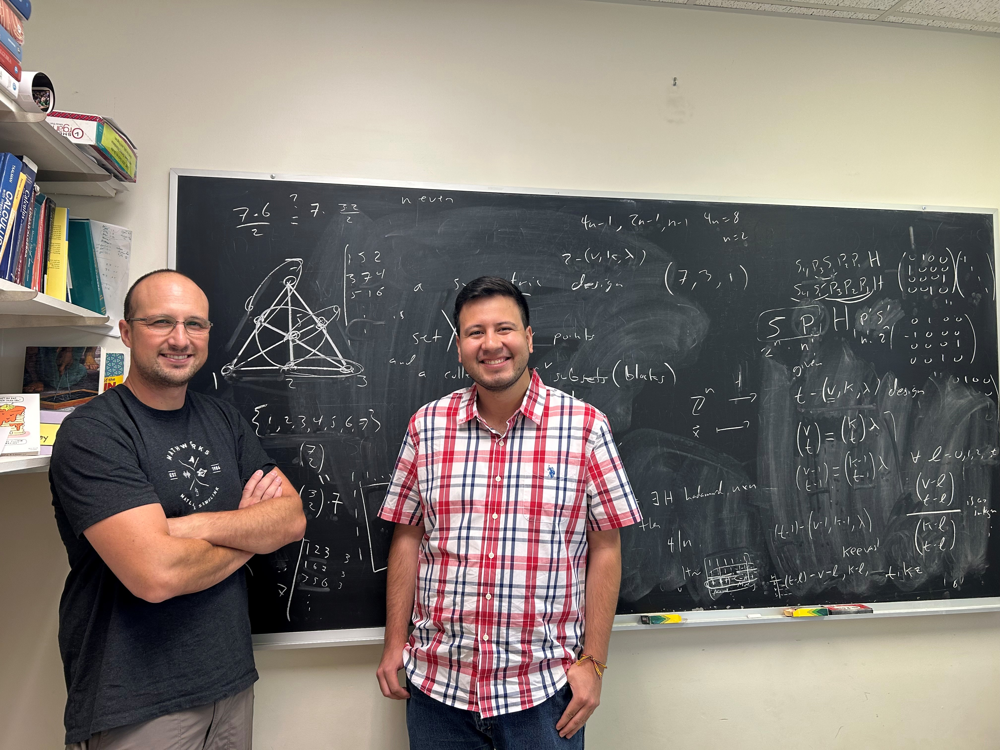

In Summer/Fall 2025 I mentored Jorge Menacho Paz in a research project.

Jorge worked with me looking at Smith normal forms, p-ranks, and other invariants of discrete structures related to Hadamard matrices. He also spent time studying methods for establishing inequivalence of families of Hadamard matrices, and other relations that can be built from these matrices. His investigations led to examining how the SNF of a Hadamard matrix can deviate from the ``standard form'' that all skew-Hadamard matrices must have. He performed many numerical experiments with SAGE, and found some neat proofs of known results. In the fall Jorge spent several months learning about polynomial representations of the symmetric group.>
Jorge gave a very nice talk at the CSM Summer Research Symposium.
Back to my homepage